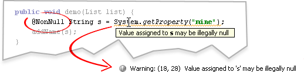

Nully has four main goals:
@NonNull
before the variable or method you want to protect.@NonNull
will not be null,
including local variables, parameters, and returned values from @NonNull
methods.
Nully provides an annotation called @NonNull
which can be applied to method parameters, variables, and return
values, as in the following example:
@NonNull
parameter cannot be passed null.
An exception will be thrown at runtime if a method passes your method a
null
for a @NonNull
parameter, and a warning will be shown if you try to pass null
to such a parameter.
void takeString(@NonNull String value) {
// code can assume value is not null
}
void myMethod() {
// CORRECT
takeString("hi");
// CORRECT
StringBuffer buf = ...;
takeString(new String(buf));
// INCORRECT - getProperty may return null
String str = System.getProperty("someProp");
takeString(str);
}
null
value to a @NonNull
variable. Any attempt to store a (possibly)
null value will produce a warning at edit- and compile-time, and will
throw an exception at runtime.
List someListMethod() { return ...; }
void method() {
@NonNull List s;
// CORRECT
s = new ArrayList();
// CORRECT
List other = new ArrayList();
s = other;
// INCORRECT
s = someListMethod();
}
@NonNull
is specified for a method, it means any attempt to return a (possibly)
null value within that method will produce a warning at edit- and
compile-time, and will throw an exception at runtime. Values returned
from @NonNull
methods are guaranteed to be non-null due to generated run-time checks
in your code.
@NonNull Object something() {
// CORRECT
return "Constant";
// CORRECT
return new ArrayList();
// INCORRECT - getProperty may return null
return System.getProperty("someProp");
// INCORRECT - value may be null
String value = null;
if (something) value = "hello";
return value;
}
void somethingUser() {
// CORRECT - something() guaranteed not to return null
@NonNull Object thing = something();
}
Nully is implemented as a plugin for the IntelliJ IDEA development environment for Java. It cannot currently be used in any way outside IDEA because of its heavy dependence on IDEA's Java source tree framework.
To install Nully, simply open IntelliJ IDEA and open File→Settings. Click Plugins, then click Available. Find Nully in the available plugins list and click the Install button in the toolbar to install Nully.
To use Nully annotations in your project, you must include a small JAR file in your application. This file is located in the Current Release section of this project's file releases.